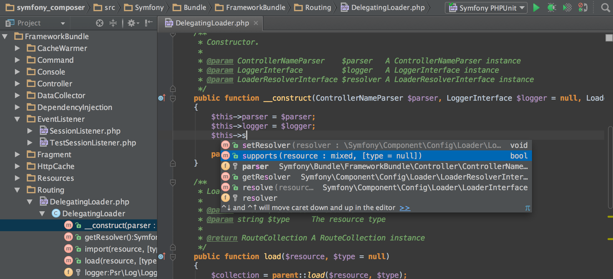
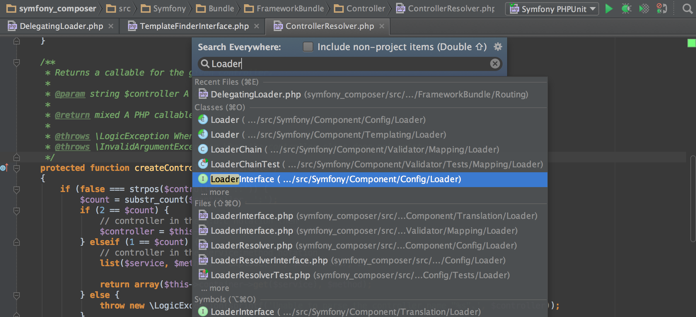
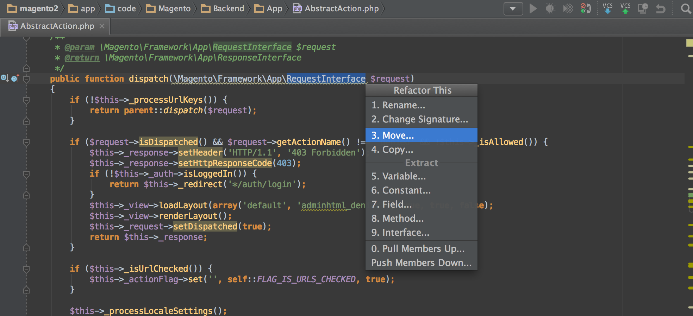
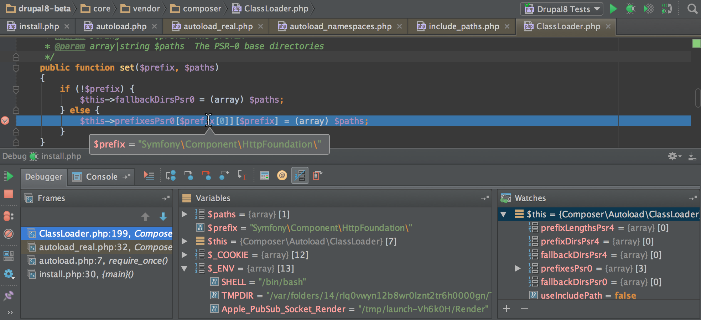
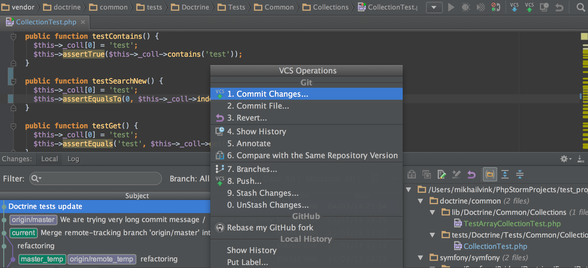

PHPStorm: Not yo mama’s IDE
You get WebStorm for free* ("PhpStorm comes with all features of WebStorm and adds full-fledged support for PHP and Databases/SQL")
Table of Contents
- Code Editor vs IDE
- Tools like Coda versus PHPStorm
- Illustrating the following claims from the PHPStorm Website
- Intelligent Coding Assistance
- Smart Code Navigation
- Fast and Safe Refactoring
- Easy Debugging and Testing
-
Frameworks Support - VCS, Deployments, Tools
- Workflow enhancements
- Useful plugins
- Code Style
Code Editor vs IDE
Editor
- lightweight/fast
- file/folders
- many languages
- many workflows
- keyboard centered
IDE
- project systems
- code understanding
- debug
- integrated build
- designers
- ALM integration
- platform tools
Intelligent Coding Assistance
Smart Code Navigation
Fast and Safe Refactoring
Easy Debugging and Testing
VCS, Deployments, Tools
Workflow enhancements
Useful plugins
- .ignore
- Apache config (.htaccess) support
- Atlassian Connector for IntelliJ IDE
- Behat Support
- CodeGlance
- Dummy Text Generator
- Git Flow Integration
- NodeJS
Code Style
No more religious wars over what works better, tab or spaces. There is fine-grained controls for determining just how verbose or concise the formatting should be.
- Sections
- Tabs and Indents
- Spaces
- Wrapping and Braces
- Blank Lines
- PHPDoc
- Other
- Arrangement
Questions?

Grab the 30 day trial